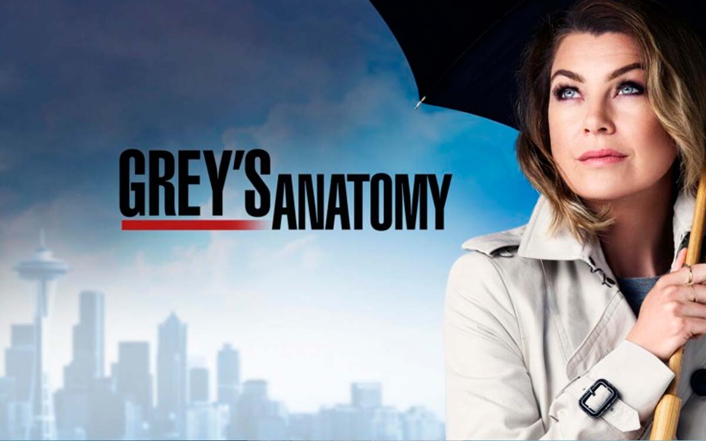

Quem Somos
Esta página foi pensada com o objetivo de compartilhar notícias e curiosidades sobre a série Grey's Anatomy. Somos uma legião de fãs que amam acompanhar o dia a dia do Grey Sloan Memorial Hospital.
Sobre a série...
A série foca na vida de médicos cirurgiões internos, residentes e atendentes; e como eles evoluem na sua profissão ao tentar manter a vida dos seus pacientes e nos seus relacionamentos pessoais. A ideia original foi de Shonda Rhimes, que além de idealizadora é produtora executiva, juntamente com Betsy Beers, Mark Gordon, Krista Vernoff, Rob Corn, Mark Wilding e Allan Heinberg. A série se passa em torno da vida da médica Meredith Grey, interpretada por Ellen Pompeo.
Grey's Anatomy é um dos dramas de melhor audiência nos Estados Unidos, apesar da queda nas últimas temporadas, estando entre os 10 melhores no ranking de audiência e sendo bem recebido pelos críticos durante o seu tempo de exibição, onde foi incluído entre os 10 melhores de várias listas de criticas em 2006. É considerado uma série de impacto significativo na cultura popular e recebeu vários prêmios, incluindo o prêmio de Melhor Série de Drama no Globo de Ouro de 2007, além de várias indicações ao Emmy, incluindo duas para Primetime de melhor série de drama.
Na 17ª temporada, a série está abordando a realidade dos hospitais em todo mundo no contexto da pandemia da Covid-19, mostrando a dificuldade e exaustão dos profissionais em salvar vidas independente de seu esforço, mesmo que isso signifique ficar longe de suas próprias famílias para não colocá-los em risco. Em 10 de janeiro de 2022, Grey's Anatomy foi renovada para a 19ª temporada. A protagonista da trama, Ellen Pompeo retornará como Meredith Grey e ainda assumirá o posto de produtora executiva da atração nos novos episódios.